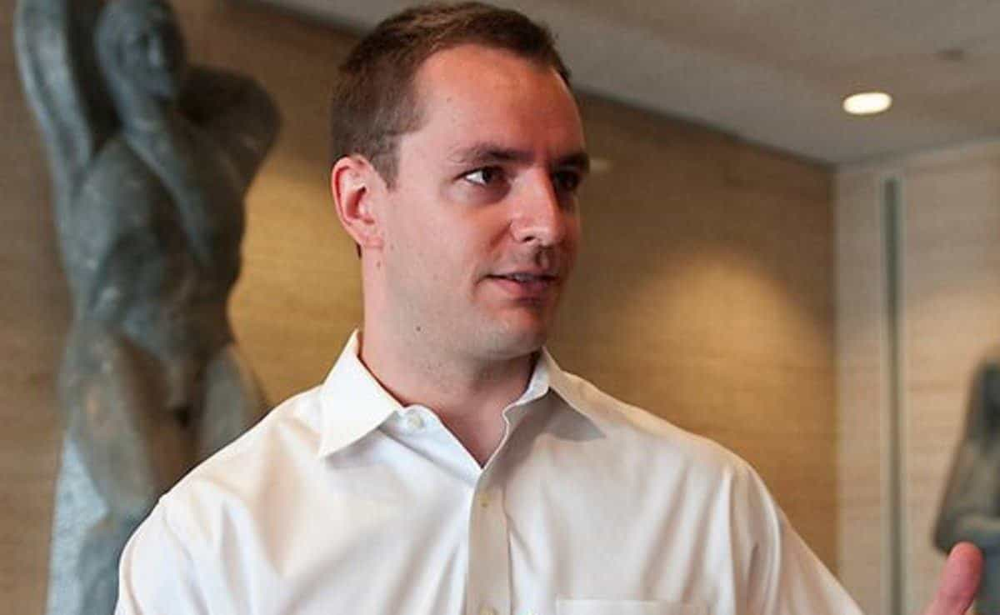

< < < Back
Les Français Ont Élu La Couille Molle Mondialiste Emmanuel Macron Et Ses Positions Pro-Islamistes – Return Of Kings
Emmanuel Macron le mondialiste, partisan des frontières ouvertes et appuyé par les banquiers Rothschild, vient de remporter une victoire écrasante à l’élection présidentielle française. Les estimations actuelles prédisent qu’il remportera aux environs des deux tiers de l’ensemble des votes. Marine Le Pen, son adversaire nationaliste, a été battue sans grande surprise.
Mais n’y aurait-il pas une bien plus grosse affaire qui se profile ? En marge de cette bien triste journée, qui scellera probablement le destin de la France en tant que colonie islamisée d’Arabie et d’Afrique du Nord, les médias français avaient reçu l’interdiction formelle de divulguer les informations concernant une série de mails fuités extrêmement embarrassants.
Jack Posobiec, du groupe Rebel Media, est devenu la première personnalité ayant partagé un tweet à propos des révélations sur Macron provenant du forum /pol/ de 4chan. Ces révélations affirment que le nouveau Président est homosexuel, a accès à des stupéfiants que lui fournissent ses assistants et possèdent des comptes bancaires offshore, ce qui le rendrait coupable d’évasion fiscale.
« On ne peut pas vous donner de détails sur la fuite, mais c’est sûrement la faute de la Russie »

Certains groupes médiatiques se sont penchés sur les déclarations de Robby Mook, ex-directeur de campagne d’Hillary Clinton, qui essaye de vendre l’idée selon laquelle ce sont les Russes qui ont piraté les mails de Macron. Mook est un médiocre propagandiste dont la réputation professionnelle dépend de sa capacité à faire croire qu’il aurait propulsé Hillary à la Maison Blanche si les « Russes » ne s’en étaient pas mêlé.
La réponse aux mails piratés la plus populaire parmi les médias traditionnels, ne tenant pas en compte les médias français qui avaient reçu l’injonction légale de ne pas en parler, est d’accuser la Russie ouvertement ou d’insinuer qu’elle est la coupable. On peut rajouter à cela une attention particulière de leur part à ne jamais parler de ce que contiennent réellement ces emails.
À titre d’exemple, NPR a renchéri dans son rôle de source sectaire et n’a pas mis beaucoup de temps avant d’afficher ses sympathies gauchistes dans cet article. Mais même avec un accès facile à la section /pol/ de 4chan, aucune mention ne fut faite des lourdes allégations concernant Macron que le forum mentionnait, et encore moins de l’analyse méticuleuse faite par ses membres.
Au rayon des sources encore moins fiables, nous trouvons le Telegraph britannique qui, comme les autres, n’a fait que se joindre au peloton pour aller relayer des « sources » peu crédibles comme Robby Mook, le directeur de la campagne 2016 d’Hillary Clinton. Après la déculottée que leur a administré Trump, qui n’a jamais bénéficié du soutien puissant des médias, de Wall Street ou des universitaires, Mook et ses acolytes ont tout intérêt à clamer que la Russie chapeaute une conspiration mondiale qui vise à discréditer les politiciens de gauche occidentaux. Une fois encore, cet article et ceux qui lui ressemblent ont totalement omis de se pencher sur le contenu des emails fuités.
Tiens donc… l’une des allégations est qu’Emmanuel Macron est homosexuel
GotNews, dont le créateur Chuck Johnson fut déterminant dans la révélation de l’affaire du faux viol d’UVA, (Université de Virgine) a sauté sur la nouvelle selon laquelle le nouveau Président français pourrait être enregistré dans la liste d’envoi d’un site de rencontres homosexuelles. Appelé Vestiaire Gay, cette anomalie a émergé de cette foule de messages fuités. Si elle est avérée, l’homosexualité de Macron justifierait l’insistance de ses nombreux détracteurs à soutenir que son mariage avec une femme d’un quart de siècle son aînée est bel et bien une mascarade.
Le fait que Macron mente à propos de son orientation sexuelle et des raisons qui l’ont poussé à se marier soulève aussi de graves questions quant à sa personnalité et son intégrité. La France va au-devant de problèmes insurmontables, particulièrement à tendance islamique et démographique. Un candidat qui est soutenu coûte que coûte par les hautes sphères de la finance et qui ne peut également pas dire quel type d’orifice il affectionne est un candidat dont les Français et Françaises de tout bord n’ont pas besoin et devraient grandement se méfier.
Macron a saisi la justice pour réfuter les accusations concernant ses comptes bancaires offshore, mais les emails lui donnent tort.

Les Îles Caïman, un des endroits où beaucoup accusent Macron de cacher un compte offshore.
Juste avant la publication des emails, Emmanuel Macron avait entamé une procédure judiciaire contre Marine Le Pen pour ses commentaires durant le débat sur les allégations d’autres sources à propos de comptes offshore aux Bahamas. Le Pen, pourtant, n’a fait que relayer les propos de sources extérieures.
En parlant d’étrange, l’une des découvertes clés de Jack Posobiec fut le travail de fond de 4chan sur les capitaux financiers suspects de Macron qui se trouvent, vous l’avez deviné, rattachés à une banque des Îles Caïman aux Caraïbes (Note du traducteur : certaines versions citent aussi l’île de Niévès).
Si cette source vient à être vérifiée par les autorités, (si tant est qu’elles y portent un quelconque intérêt), cela tiendrait de l’ironie la plus totale. Pourquoi ? Eh bien parce que jusqu’à ce qu’il crée son propre mouvement, Macron était un élément déterminant du gouvernement socialiste soi-disant anti-puissances financières.
Pourquoi les Français ont élu les mêmes pour recommencer ?
Après les attentats du Bataclan et l’attaque au camion-bélier de Nice, Return Of Kings espérait qu’un homme plus sensé que François Hollande (ou même une femme dans le style de Le Pen) deviendrait le prochain Président de la République française. Mais hélas, le peuple de France a bien voté pour un représentant du système, un mondialiste qui, jusqu’à maintenant, étaient un des consultants les plus haut placés du gouvernement Hollande.
Alors que les emails de Macron laissent à penser que ses assistants directs lui achètent des stupéfiants illégaux en ligne et font référence à des “achats de c… (cocaïne ?) pour le boss”, on dirait bien que les Français ont eux aussi leur drogue de prédilection: refuser de voir la vérité en face. Il n’y a que ça pour expliquer la suite d’évènements qui se sont déroulés en France ce weekend.
Disons-le franchement : la France va en baver pendant cinq ans – cinq ans qui ont de grandes chances d’annoncer un demi-siècle de malheurs sans précédent. On vous aura prévenu.
En Savoir Plus: Le Favori De L’Élection Présidentielle Française, Cette Couille Molle Marié À Une Femme De 25 Ans Son Aînée